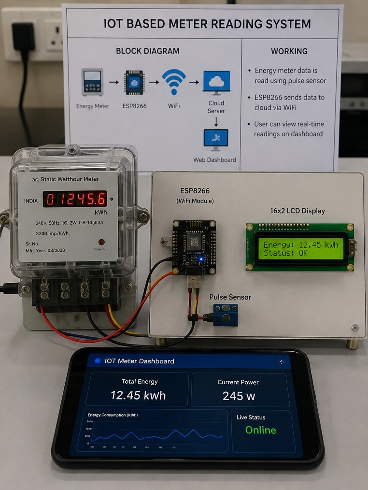
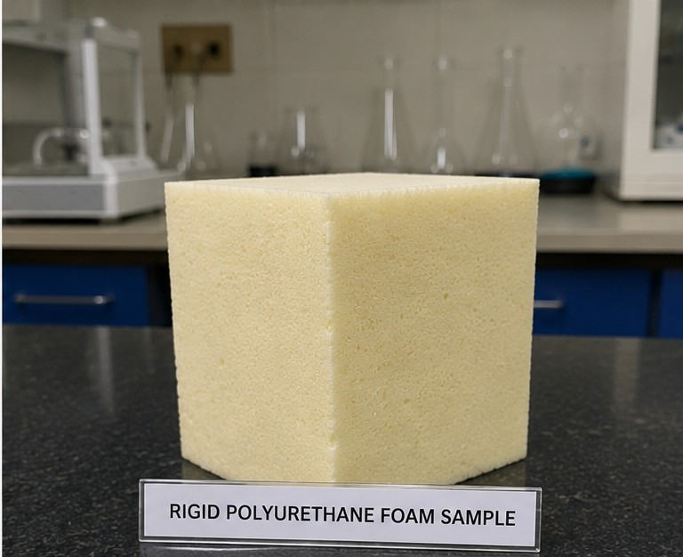

Mechanical Engineering student with hands-on experience in manufacturing and quality control at Tata Motors. Passionate about automotive technology and motorsports, aiming to contribute to high-performance engineering and innovation in the automotive industry.
I'm Sakshi Shelar, a Mechanical Engineering student at Dr. D. Y. Patil Institute of Technology, Pune. I bring practical experience in manufacturing and quality control from my time at Tata Motors, where I worked on dimensional inspection, root cause analysis, and process improvement on the shop floor.
I'm driven by automotive technology and motorsports, and I'm continuously building skills across CAD, simulation, and embedded systems — from IoT-based sensor projects to experimental material studies on polyurethane composite foams.
Gained hands-on experience in core manufacturing processes including grinding, drilling, milling, and turning on production machinery. Assisted in part-designing activities, learning design-to-manufacturing workflows and component tolerances.
Worked in the Quality Control and Inspection division, performing visual and dimensional inspections of automotive components using Vernier calipers, micrometers, and height gauges. Assisted in Root Cause Analysis (Why-Why) for customer complaints and internal rejections, and participated in daily quality audits and Kaizen activities.
Completed a 6-week industrial training focused on IoT, microcontroller programming, Arduino, and Linux software. Gained hands-on experience in circuit simulation, sensor interfacing, and embedded system development for real-time automation and environmental monitoring projects.

Built an IoT-based smart meter reading system using Arduino and Embedded C/C++ to automate meter data collection. Integrated sensors and communication modules for real-time acquisition and remote monitoring, removing the need for manual readings. Team of 4, mentored by Dr. Anil Badade.

Investigated rigid polyurethane composite foams reinforced with cellulose and melamine additives to improve thermal and structural properties. Analyzed thermal behavior via TGA and DSC, and studied foam microstructure using SEM to determine the optimum formulation. Team of 3, mentored by Dr. Akash Biradar and Dr. Amarjit Kene.